Чертежи оружия
Боковой профиль каждого ствола в миллиметрах: ось канала ствола как база,
сетка 50 мм, размерные линии и подписи деталей. Названия рабочие, ничьих торговых марок
на листах нет. Прицел показан установленным, но он съёмный — планка размечена отдельно.
PP-9 — Пистолет-пулемёт 9×19, роликовое запирание
PNG для Blender ПП 1 / 3 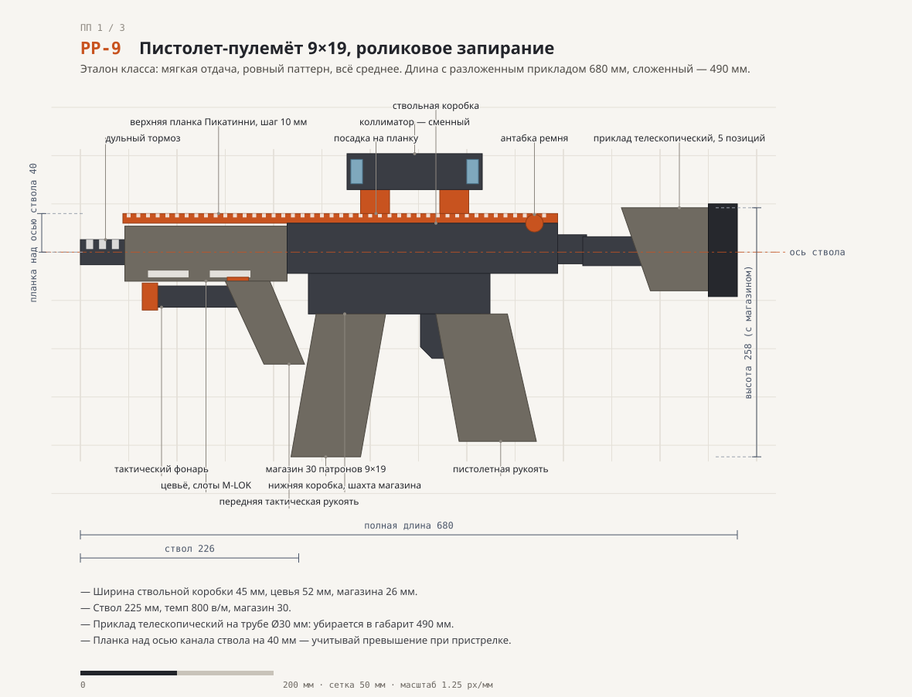
PDW-57 — ПП-буллпап 5,7 мм, магазин сверху
PNG для Blender ПП 2 / 3 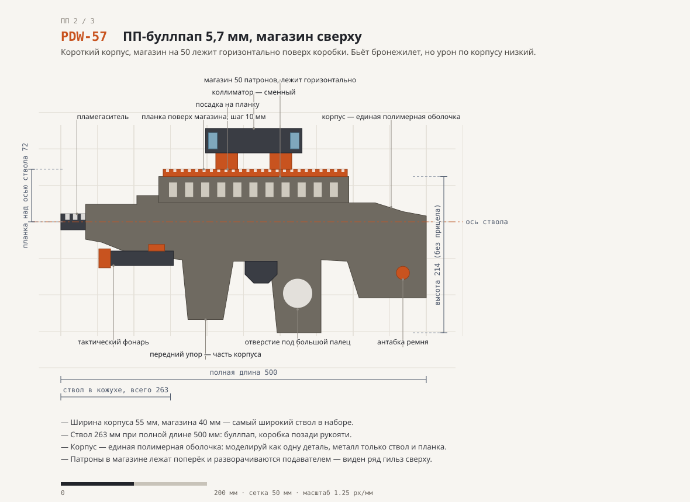
PP-45 — ПП .45 с гасящим затвором
PNG для Blender ПП 3 / 3 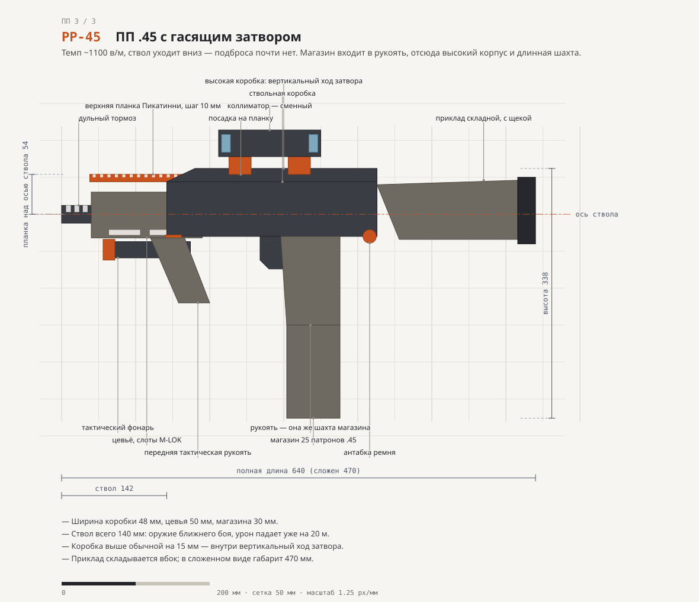
AV-74 — Автомат 5,45×39, длинный ход поршня
PNG для Blender Штурмовая 1 / 3 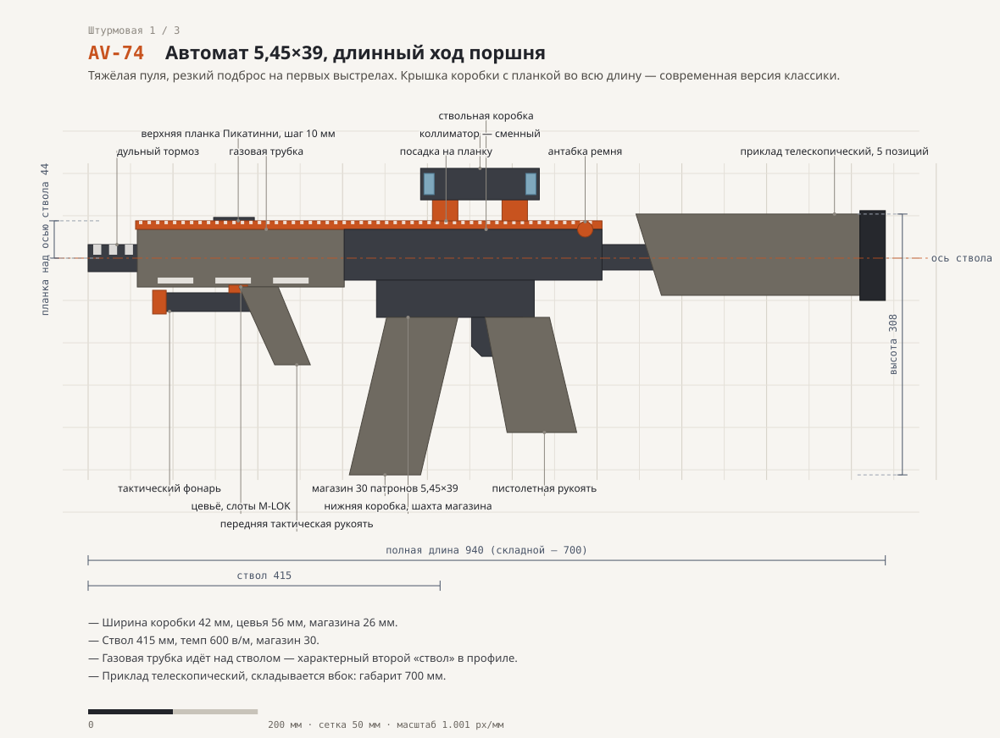
AR-556 — Карабин 5,56×45, короткий ход поршня
PNG для Blender Штурмовая 2 / 3 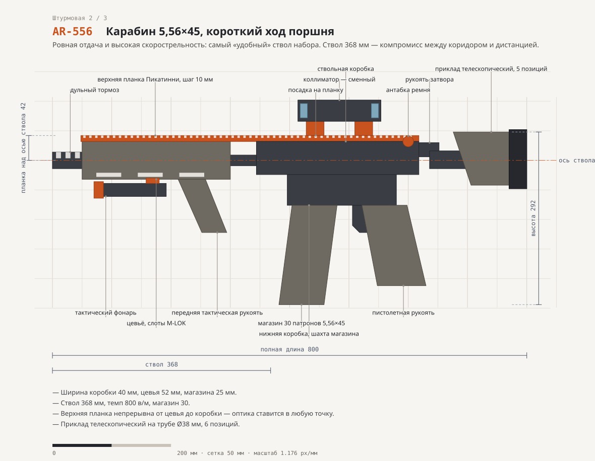
AC-556 — Карабин 5,56×45, полимерная коробка, складной приклад
PNG для Blender Штурмовая 3 / 3 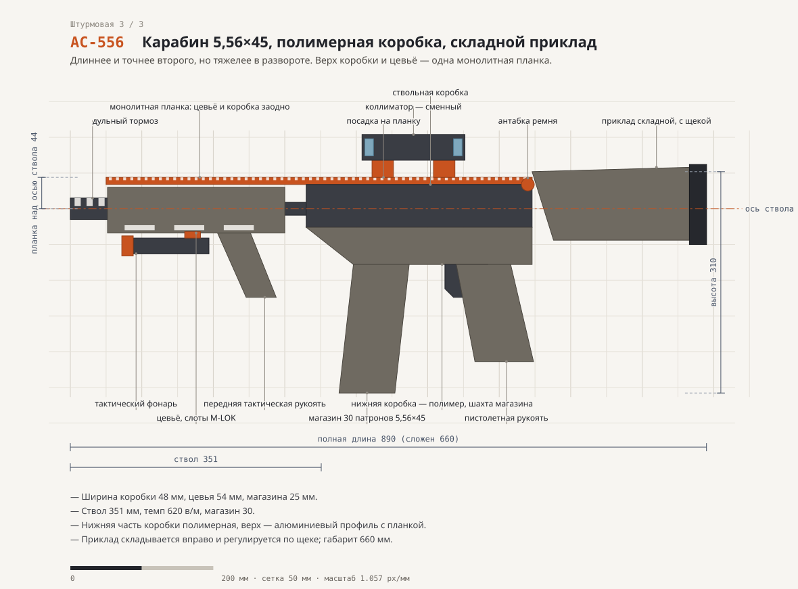
SG-12D — Обрез двуствольный, 12 калибр
PNG для Blender Дробовик 1 / 3 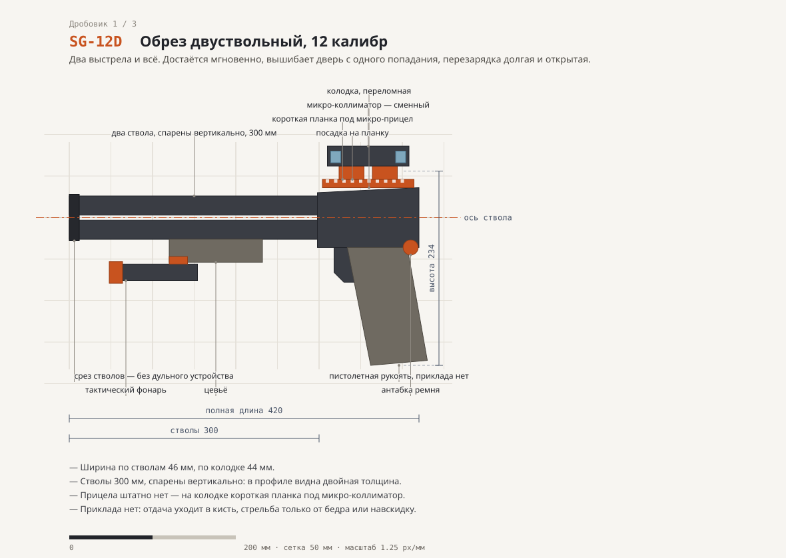
SG-12P — Помповое ружьё, 12 калибр, подствольный магазин
PNG для Blender Дробовик 2 / 3 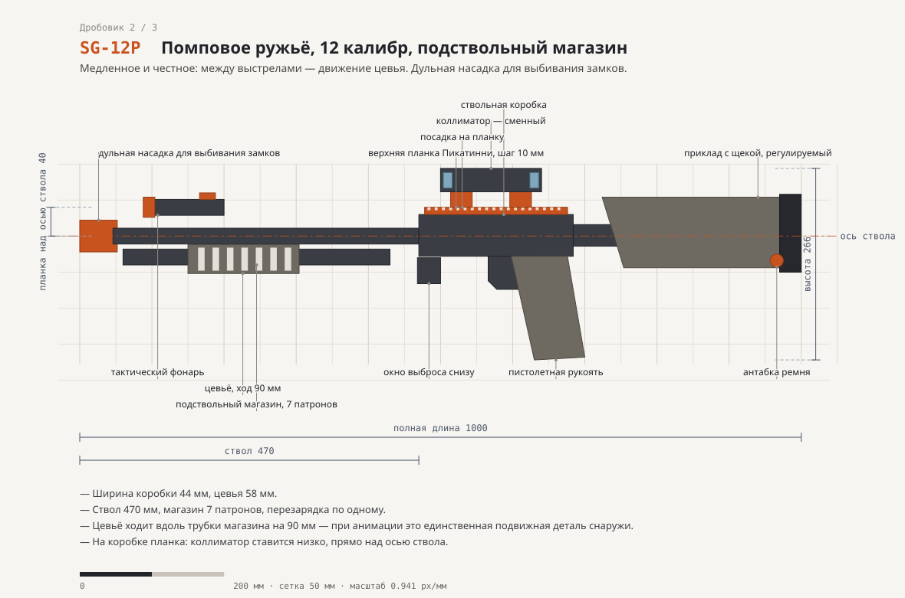
SG-12M — Самозарядное ружьё 12 калибра с коробчатым магазином
PNG для Blender Дробовик 3 / 3 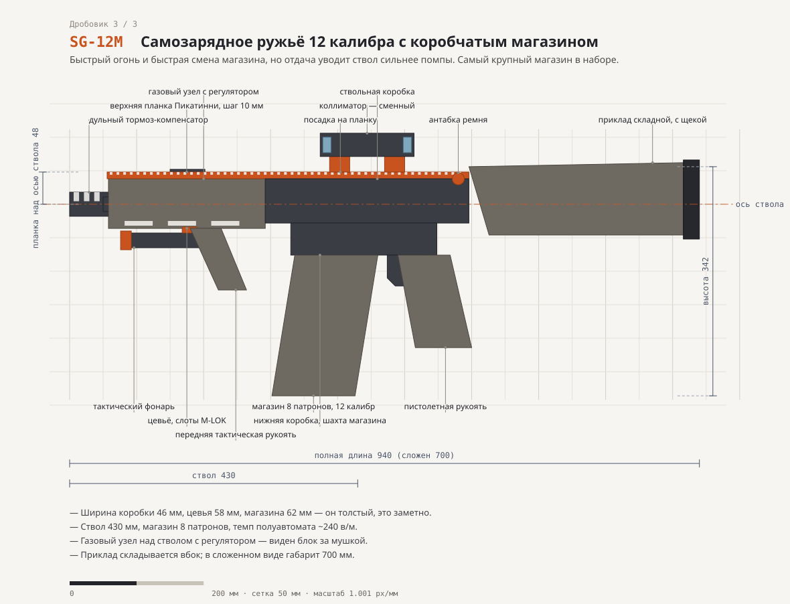
AMR-50 — Крупнокалиберная винтовка .50, самозарядная
PNG для Blender Крупный калибр 1 / 2 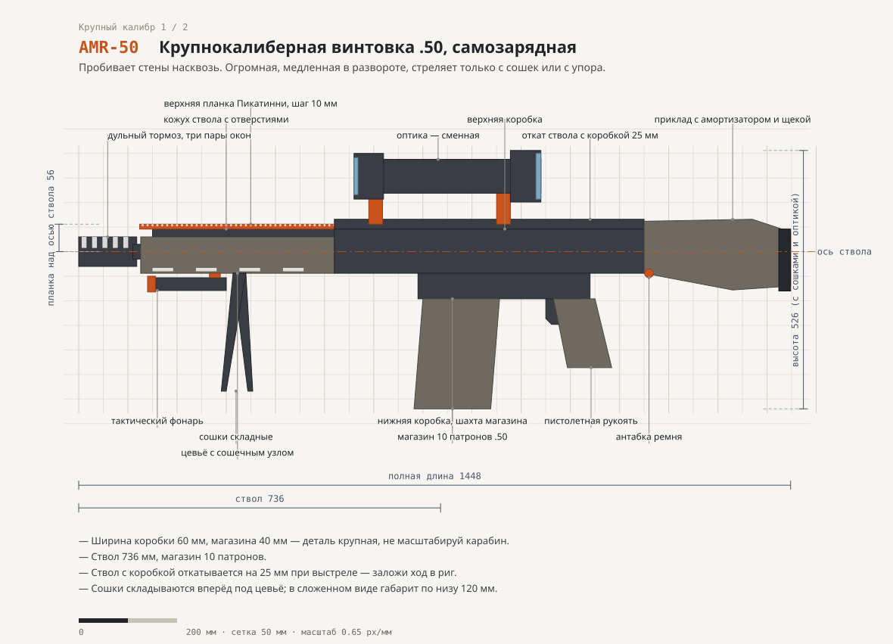
DMR-762 — Самозарядная винтовка 7,62×51, марксманская
PNG для Blender Крупный калибр 2 / 2 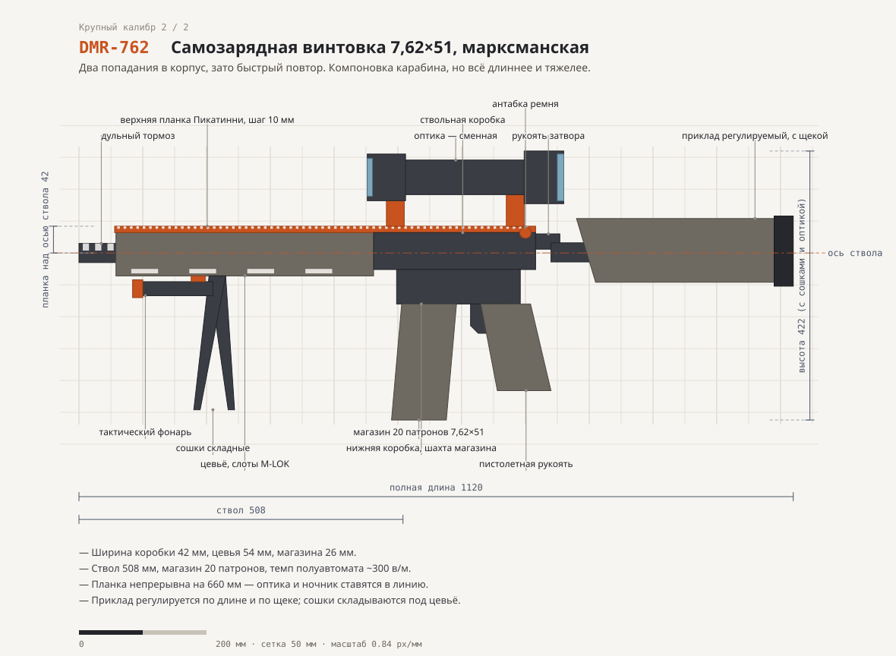
← к игре